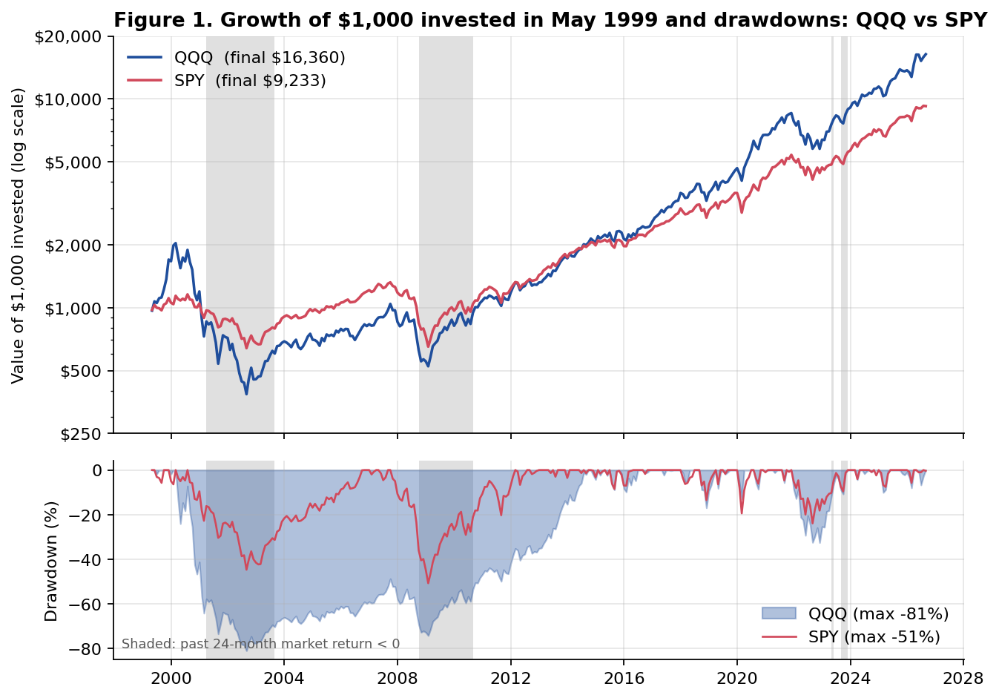
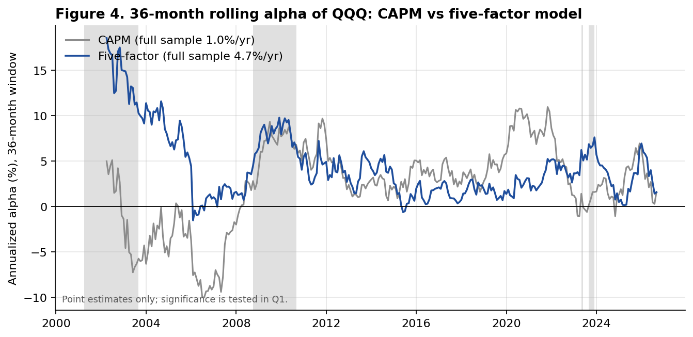
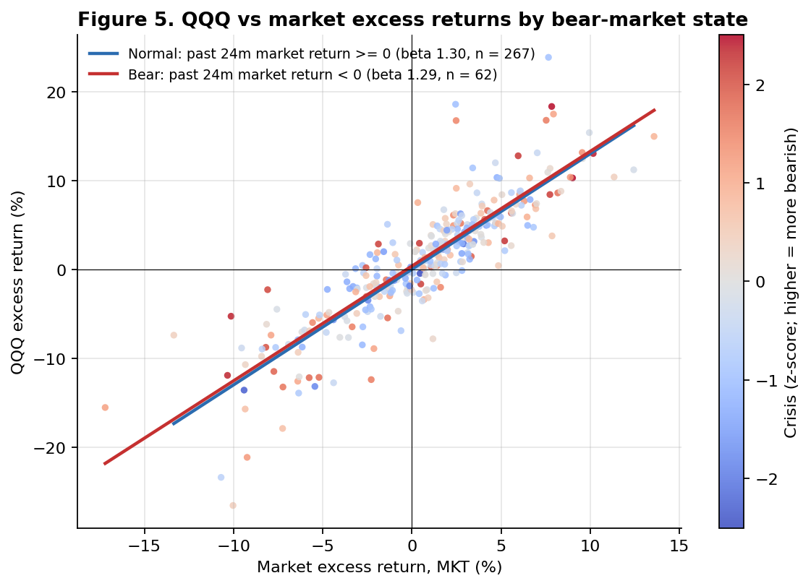

Is the Nasdaq-100 premium alpha or factor risk?
From May 1999 to September 2026, $1,000 in QQQ grew to $16,360, against $9,233 in SPY. QQQ also fell 81% from peak to trough and took 14 years to recover. We ask whether its extra return is alpha or compensation for factor exposure. The data are 329 monthly observations of returns and Fama-French factors.

Findings
| Model | Alpha (annual) | 95% CI (Newey-West) | p-value |
|---|---|---|---|
| CAPM | 0.96% | [-4.48, 6.39] | 0.73 |
| Fama-French 3 | 2.24% | [-0.89, 5.37] | 0.16 |
| Fama-French 5 | 4.74% | [1.84, 7.64] | 0.001 |
| FF5 + momentum | 5.01% | [2.09, 7.94] | 0.001 |
- Against the market alone, there is no alpha. QQQ's Sharpe ratio (0.47) is almost identical to SPY's (0.48). Its higher return is about what its higher volatility predicts.
- Profitability and investment factors matter. QQQ loads negatively on value (HML -0.47), profitability (RMW -0.40) and investment (CMA -0.17). Adding RMW and CMA to FF3 is highly significant (F = 33.1, p < 0.001).
- The five-factor model leaves a positive alpha. Those negative tilts are priced at a discount, so once they are accounted for QQQ looks too profitable rather than fairly paid. The alpha is significant (+4.7% a year).
- Beta rises in crises. Market beta increases by 0.08 per standard deviation of the crisis indicator (one-sided p = 0.014). It goes from 1.14 in an average state to about 1.30 in a severe one.
- Out of sample (train 1999-2018, test 2018-2026), FF5 has the lowest prediction error. Momentum adds nothing.


Methods
- OLS with Newey-West (HAC) standard errors; nested F-tests and robust Wald tests.
- Diagnostics: residual checks, VIF, influence measures, factor orthogonalization and ridge traces.
- Robustness: dropping influential months and the 2000-02 crash, Huber regression, three crisis definitions.
- Out-of-sample: a 70/30 time split comparing training MSE with test MSPR, rolling betas, a hedging backtest and an all-subsets comparison.